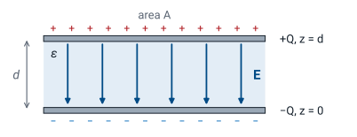
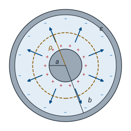
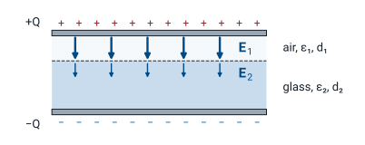

L25 - Boundary Conditions and Capacitance#
Boundary Conditions and Capacitance
Today we find the capacitance of a structure from its shape and the material inside it.
Lesson 25 · Module 2: Electrostatics · Maj Ellis · Dr. Neil Rogers
Learning Objectives
- I can apply the electric field boundary conditions to calculate electric fields on both sides of a material boundary.
In circuits, a capacitor is a number printed on a part. Today we derive that number from the fields. Any two conductors separated by an insulator store charge when a voltage is applied between them, and the ratio of the charge to the voltage, the capacitance, depends only on their shape and on the material between them. We find it with a four-step method that uses every tool of Module 2: the boundary condition at a conductor or Gauss’s law for the field, and the line integral of the field for the voltage. We apply it to the parallel-plate capacitor and to the coaxial line, which finally derives the per-unit-length capacitance \(C'\) that Lesson 6 quoted for RG-58. Then a capacitor with two dielectric layers puts the dielectric boundary condition to work and shows why a thin air gap can break down before the rest of the insulator.
Where We Were
Lesson 24: just outside a conductor,
Lesson 22: the voltage of point \(P_2\) relative to point \(P_1\) is
Lesson 24 found that the field next to a conductor points along the outward normal \(\hat{\mathbf{n}}\) and that its strength is the surface charge density divided by the permittivity. Lesson 22 defined the potential difference between two points as the work per unit charge to move a test charge from the first to the second against the field, which is the negative of the line integral of \(\mathbf{E}\) along any path between them. A field pointing from \(P_2\) toward \(P_1\) makes \(V_{21}\) positive: the field runs from high potential to low. Today we combine the two to turn a charge on a pair of conductors into a voltage between them.
Capacitance
Two conductors carry \(+Q\) and \(-Q\), with voltage \(V\) from the negative to the positive one:
Double \(Q\): \(\mathbf{E}\) doubles, so \(V\) doubles.
\(C\) depends only on the geometry and \(\epsilon\).
A capacitor is any pair of conductors that carry equal and opposite charges, \(+Q\) and \(-Q\). The charges create a field between the conductors, and the field creates a voltage \(V\), the potential of the positive conductor relative to the negative one. The capacitance is the ratio \(C = Q/V\), in farads. The ratio does not depend on how much charge we place. Coulomb’s law is linear, so doubling every charge doubles the field at every point, and the line integral of a doubled field is a doubled voltage. The charge and voltage grow together, and their ratio is fixed by the shape of the conductors, their spacing, and the permittivity of the material between them.
The Method
Place \(+Q\) on one conductor and \(-Q\) on the other.
Find \(\mathbf{E}\) between them, from Gauss’s law or the conductor boundary condition.
Integrate: \(V = -\int_{-}^{+} \mathbf{E}\cdot d\mathbf{l}\).
Divide: \(C = Q/V\).
Every capacitance problem in this course follows the same four steps. We assume a charge rather than a voltage because the field follows directly from the charge: by Gauss’s law when the structure has enough symmetry, or by the boundary condition when the charge sits on a flat conductor. The voltage is the line integral of the field from the negative conductor to the positive one; any path gives the same answer, so we choose the one along the field lines. The charge \(Q\) then appears in both the numerator and the voltage, and it cancels in the ratio, leaving only geometry and permittivity.
The Parallel-Plate Capacitor

Plates large compared with \(d\): ignore the fringing field.
Two flat plates of area \(A\) face each other a distance \(d\) apart, with a dielectric of permittivity \(\epsilon\) between them. We put the positive plate at \(z = d\) and the negative plate at \(z = 0\). Each charge spreads uniformly over the inner face of its plate, so the surface charge densities are \(+\rho_s\) and \(-\rho_s\), with \(\rho_s = Q/A\). Near the edges, the field bulges outward, an effect called fringing. When the plates are much wider than they are apart, the fringing region is a small fraction of the whole, and we treat the field between the plates as uniform.
The Field Between the Plates
At the positive plate, the outward normal into the gap is \(-\hat{\mathbf{z}}\):
Step 2 uses the conductor boundary condition from Lesson 24 at the inner face of the top plate. The conductor is the plate, and the region outside it is the gap below, so the outward normal points down, \(-\hat{\mathbf{z}}\). The normal component of \(\mathbf{D}\) along that normal equals the surface charge density \(+\rho_s\), which makes \(\mathbf{D} = -\hat{\mathbf{z}}\ \rho_s\): the field points from the positive plate toward the negative one, as it should. The same condition at the bottom plate, where the outward normal is \(+\hat{\mathbf{z}}\) and the charge density is \(-\rho_s\), gives the same \(\mathbf{D}\), which confirms the field is uniform across the gap. Dividing by \(\epsilon\) gives \(\mathbf{E}\).
Voltage and Capacitance
Integrate from the negative plate, \(z = 0\), to the positive plate, \(z = d\):
Step 3 integrates along a straight path from the bottom plate up to the top plate, so \(d\mathbf{l} = \hat{\mathbf{z}}\ dz\). The field points down, the path points up, and their dot product is \(-\rho_s/\epsilon\); the two minus signs cancel, and the integral over the gap of length \(d\) gives a positive voltage, \(\rho_s d/\epsilon\). The positive plate is at the higher potential, as it must be. Step 4 divides the charge, \(Q = \rho_s A\), by that voltage. The surface charge density cancels, and the capacitance is \(\epsilon A/d\). A larger plate area or a higher permittivity raises the capacitance; a wider gap lowers it.
Worked Example: Planes in a Circuit Board
Two \(10 \times 10\) cm copper planes, \(0.2\) mm apart in FR-4, \(\epsilon_r = 4.4\):
Worked example — the capacitance between two planes of a circuit board
A four-layer circuit board places a full copper power plane directly above a full copper ground plane. Each plane is \(10\ \text{cm} \times 10\ \text{cm}\), so \(A = 0.01\ \text{m}^2\), and they are separated by \(d = 0.2\ \text{mm}\) of FR-4 fiberglass, with \(\epsilon_r = 4.4\). The plates are 500 times wider than they are apart, so fringing is negligible, and
Board designers count on this capacitance. It sits directly across the power supply of every chip on the board, with almost no inductance in series, and it supplies the fast bursts of current that discrete bypass capacitors are too far away to deliver.
The Coaxial Line

Length \(\ell\); charge \(+\rho_\ell\) per meter on the inner conductor.
Now the structure Lesson 3 introduced: an inner conductor of radius \(a\) inside a shield of inner radius \(b\), with a dielectric of permittivity \(\epsilon\) between them. For step 1 we place a line charge density \(+\rho_\ell\), in C/m, on the inner conductor and \(-\rho_\ell\) on the shield, over a length \(\ell\), so \(Q = \rho_\ell\ \ell\). The structure is the same at every angle and every position along its axis, so the field between the conductors can point only radially and can depend only on the distance \(\rho\) from the axis. That symmetry is what lets Gauss’s law find it.
The Field From Gauss’s Law
A Gaussian cylinder of radius \(\rho\) and length \(\ell\), with \(a < \rho < b\):
Step 2 applies Gauss’s law, as in Lesson 20, to a closed cylinder of radius \(\rho\) between the conductors, coaxial with them. On its curved side the outward normal is \(\hat{\boldsymbol{\rho}}\), the field is radial, and \(D_\rho\) has the same value everywhere, so the flux is \(D_\rho\) times the side area \(2\pi\rho\ell\). On the flat end caps the outward normal is along the axis, perpendicular to the radial field, so they carry no flux. The enclosed charge is the charge on the length \(\ell\) of the inner conductor, \(\rho_\ell\ \ell\). The shield’s charge lies outside the cylinder and does not count. Solving for \(D_\rho\) and dividing by \(\epsilon\) gives a field that falls off as \(1/\rho\).
Voltage and Capacitance per Meter
Integrate from the shield, \(\rho = b\), to the inner conductor, \(\rho = a\):
Step 3 integrates along a radial path from the negative conductor, the shield at \(\rho = b\), to the positive one, the inner conductor at \(\rho = a\), so \(d\mathbf{l} = \hat{\boldsymbol{\rho}}\ d\rho\) with \(\rho\) running from \(b\) down to \(a\). The integral of \(1/\rho\) is \(\ln\rho\), and \(-(\ln a - \ln b) = \ln(b/a)\), which is positive because \(b > a\). Step 4 divides the charge on the length \(\ell\) by the voltage; the line charge density cancels. The capacitance grows in proportion to the length, because each meter of cable is another capacitor in parallel, so the natural quantity for a transmission line is the capacitance per meter, \(C'\).
Closing the Loop on Lesson 6
RG-58: \(a = 0.405\) mm, \(b = 1.475\) mm, \(\epsilon_r = 2.25\).
The value Lesson 6 quoted.
\(L'\) comes from Ampere’s law in Module 3.
Lesson 6 used this result for \(C'\) without deriving it, and Lesson 3 used the RG-58 numbers in the lumped-element model. Now the derivation is complete. With the RG-58 dimensions and solid polyethylene, the numerator is \(2\pi \times 2.25 \times 8.854 \times 10^{-12} = 1.252 \times 10^{-10}\) F/m and the logarithm is \(\ln 3.642 = 1.293\), so \(C' = 96.8\) pF/m, the value Lesson 6 quoted. A one-meter patch cable is a \(97\) pF capacitor, which a bench LCR meter can confirm. The other half of the characteristic impedance, \(L' = (\mu/2\pi)\ln(b/a) = 259\) nH/m, needs the magnetic field between the conductors; Module 3 derives it from Ampere’s law, and then \(Z_0 = \sqrt{L'/C'} = 51.7\ \Omega\) rests entirely on derivations from this course.
Two Dielectric Layers

No free charge on the interface: \(D_{n1} = D_{n2}\).
Now the boundary conditions go to work inside a capacitor. Suppose the space between the plates holds two layers: thickness \(d_1\) with permittivity \(\epsilon_1\) and thickness \(d_2\) with permittivity \(\epsilon_2\), stacked parallel to the plates. The field is normal to the interface between the layers, and the interface carries no free charge, so the normal condition from Lesson 24 says \(\mathbf{D}\) is the same in both layers. The electric field is not: it is \(D/\epsilon\) in each layer, so it is stronger in the layer with the smaller permittivity, as the longer arrows in the air layer show.
Capacitors in Series
The conductor condition at either plate gives \(D = \rho_s\), exactly as for a single dielectric, and the normal condition carries that same \(D\) across the interface. Dividing by each permittivity gives the field in each layer. Each field is uniform within its layer, so the line integral from the negative plate to the positive plate is the sum of the two fields times the two thicknesses. Dividing the charge \(\rho_s A\) by the voltage gives the capacitance. Its reciprocal is \(d_1/(\epsilon_1 A) + d_2/(\epsilon_2 A)\), which is \(1/C_1 + 1/C_2\), where \(C_1\) and \(C_2\) are the parallel-plate capacitances of the two layers on their own. Two stacked layers behave as two capacitors in series, a circuit rule that here comes from the normal boundary condition.
Worked Example: An Air Gap
\(1\) mm of glass, \(\epsilon_r = 5\), with a \(0.1\) mm air gap; \(A = 0.01\ \text{m}^2\); \(V = 1\) kV.
No gap |
With gap |
|
|---|---|---|
\(C\) |
\(443\) pF |
\(295\) pF |
\(E\) in glass |
\(1.0\) MV/m |
\(0.67\) MV/m |
\(E\) in air |
— |
\(3.3\) MV/m |
Worked example — the air gap that breaks down
A capacitor uses a \(1\ \text{mm}\) glass sheet, \(\epsilon_r = 5\), between plates of area \(A = 0.01\ \text{m}^2\), charged to \(1\ \text{kV}\). With the plates pressed flat against the glass,
Now one plate lifts away and leaves a \(0.1\ \text{mm}\) air gap, layer 1, above the \(1\ \text{mm}\) of glass, layer 2. The sum in the denominator is
so \(C = \epsilon_0 A/(3 \times 10^{-4}) = 295\) pF. At \(1\) kV the flux density is \(D = 1000\ \epsilon_0/(3 \times 10^{-4})\), and the fields are
As a check, \(3.33 \times 10^6 \times 10^{-4} + 0.667 \times 10^6 \times 10^{-3} = 333 + 667 = 1000\) V. Air breaks down near \(3\ \text{MV/m}\), so the thin gap arcs while the glass, at a third of its old field, is barely stressed. This is why high-voltage insulation is cast or potted with no voids: an air bubble in a good insulator carries the highest field in the part.
Summary
Symbol / idea |
What it is |
Number to remember |
|---|---|---|
\(C\) |
Charge over voltage for two conductors |
\(C = Q/V\), set by geometry and \(\epsilon\) |
The method |
Assume \(\pm Q\), find \(\mathbf{E}\), integrate for \(V\), divide |
|
Parallel plates |
Uniform field, fringing ignored |
\(C = \epsilon A/d\) |
Coaxial line |
Radial field from Gauss’s law |
\(C' = \frac{2\pi\epsilon}{\ln(b/a)}\) |
RG-58 |
\(a = 0.405\) mm, \(b = 1.475\) mm, \(\epsilon_r = 2.25\) |
\(C' = 96.8\) pF/m |
Two layers |
Same \(D\) in both; capacitors in series |
\(C = \frac{A}{d_1/\epsilon_1 + d_2/\epsilon_2}\) |
Air gap |
The field is largest in the lowest \(\epsilon\) |
Air breaks down near \(3\) MV/m |
Practice
Where This Is Going
Lesson 26: the electrostatics lab.
Module 3: magnetostatics. Ampere’s law gives the coaxial \(L'\), and with it \(Z_0\).
Today closes the theory of electrostatics. Module 2 began with Coulomb’s law for point charges, built up the field of charge distributions, found the shortcut of Gauss’s law, turned fields into potentials, carried them across boundaries, and ended with capacitance, the circuit quantity that summarizes all of it for a pair of conductors. Lesson 26 measures these fields and capacitances at the bench. Module 3 then does the same work for the magnetic field. Steady currents replace static charges, Ampere’s law plays the part of Gauss’s law, and inductance plays the part of capacitance; its first payoff is the coaxial \(L'\), which completes the derivation of the characteristic impedance.